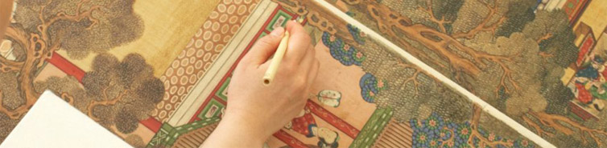
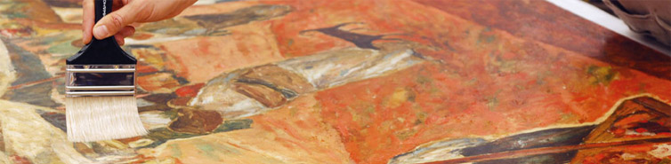

過往常以西方藝術為藝術潮流的主流，然在亞洲經濟崛起和全球化的帶動下，亞洲當代藝術已成為國際上的焦點，且正持續擴大進行中，並逐漸形成與西方藝術對話的價值。本館在藝術品典藏政策除賡續依據「典藏藝術品第六期中程工作計畫」，由觀照臺灣美術地域性特色、開創與國際藝壇對話的平臺出發，在臺灣美術發展脈絡、各類媒材的發展、藝術家系譜等幾個面向檢視本館現有的典藏，除典藏臺灣藝術家作品外，並且因為亞洲當代藝術的興起，進一步深入思索臺灣與亞洲當代藝術發展現象的連結關係、美學主體和文化與形式潮流等問題。96、97跨年辦理「2007亞洲藝術雙年展」也開啟本館對於亞洲當代藝術典藏的契機，這是本館典藏政策較為關鍵性的改變。而電腦媒體、傳播科技革命性的改變人類生活方式和人際社群的互動關係，也顛覆藝術創作形式的表現，相對於運用軟體、系統、電腦科技所創作新媒體藝術作品的典藏與保存機制，以及藉助資訊科技的便捷性與自動化的效力，輔助藝術品的典藏管理，以節省管理的人力及強化管理的效能，也成為今年與未來需要持續省思與關照的議題。

本館藝術品典藏著重在臺灣美術各媒材類別發展脈絡與藝術家完整系譜建構的面向，蒐藏重點為版畫、當代攝影、現代水墨畫與當代藝術等作品，並考量臺灣藝術與亞洲各國藝術發展之關係連結與開拓的國際觀，兼顧亞洲藝術家作品的蒐藏。此外，尚包含青年藝術家購藏、移撥交藏與捐贈來源等作品。
此外，捐贈及政府機構移撥交付收藏也是本館藏品的主要來源，約佔藏品總數一半以上。為鼓勵藝術家或其家屬捐贈作品，本館除編列預算給予更專業的保存與維修護外，自本年度開始實施「獎助碩、博士生研究臺灣美術論文作業要點」，徵選針對臺灣美術史研究的論文4篇，鼓勵碩博士生加入研究的行列；並且增闢F型展覽室，以捐贈藏品展為主要規劃，增加對藏品的引介及強化臺灣美術的研究。此外，臺灣臺北地方法院檢察署於97年度移撥交付收藏的作品53件，該批作品包括蕭勤、霍剛、吳昊、秦松，及數件外國藝術家的作品，作品媒材類別包括油畫、壓克力、版畫、雕塑與陶藝等，創作年約從1950至2000年代之間。該移撥案實為本國司法機關扣押珍貴文物移交專業典藏的前導，具深遠的示範意義。